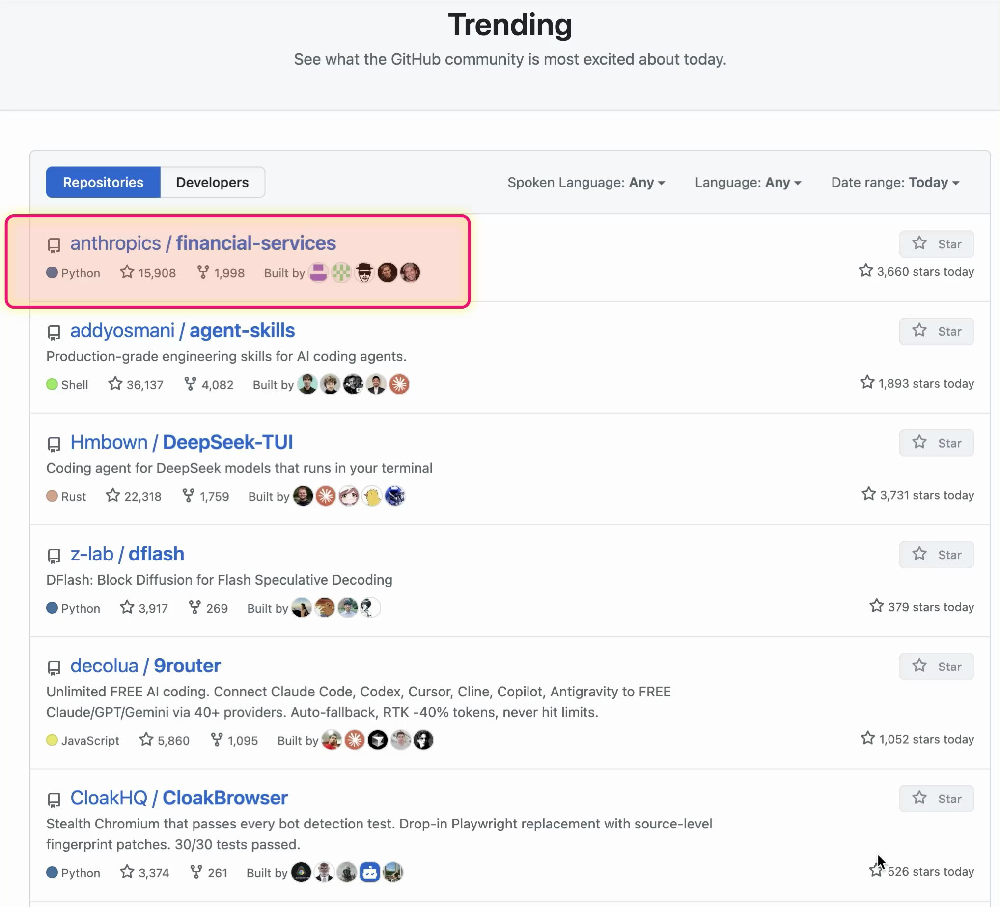
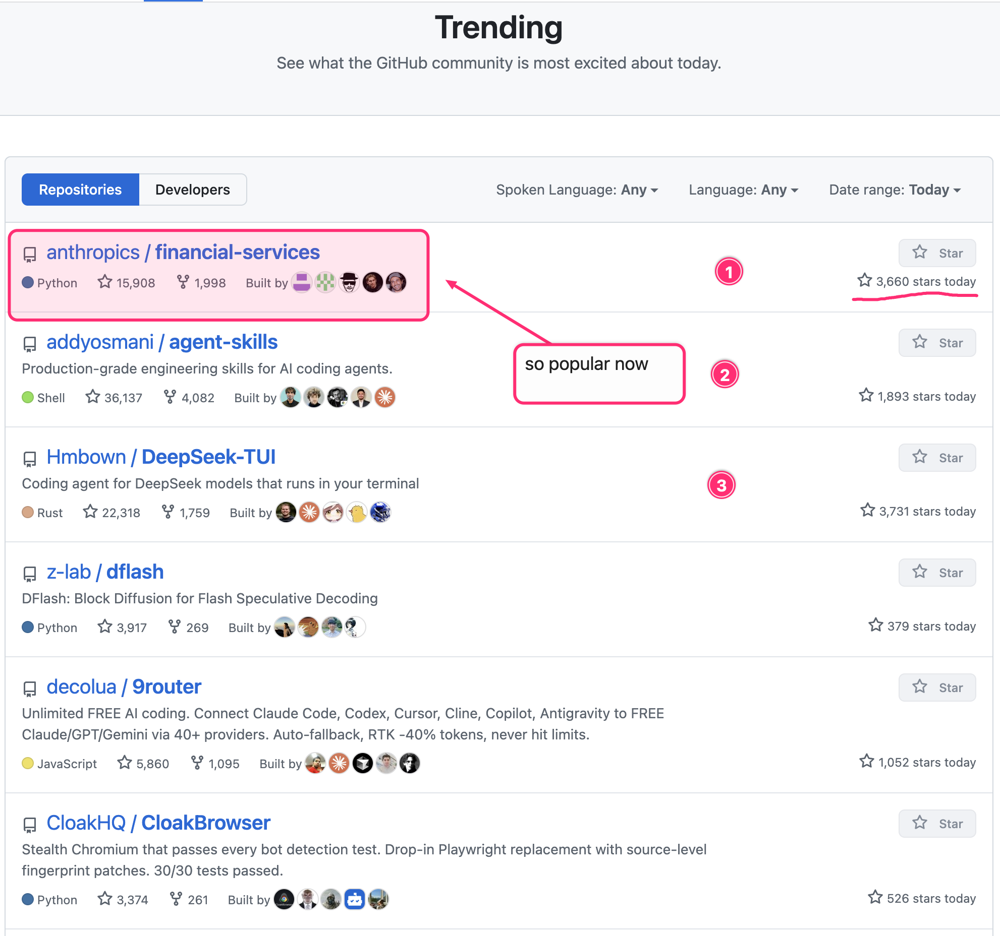
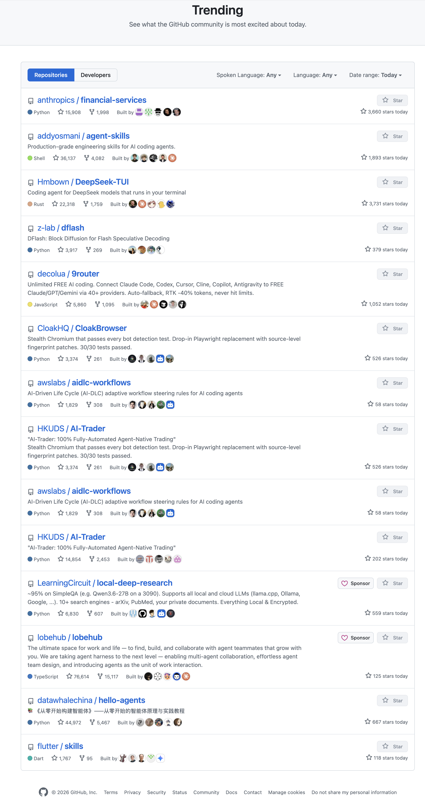
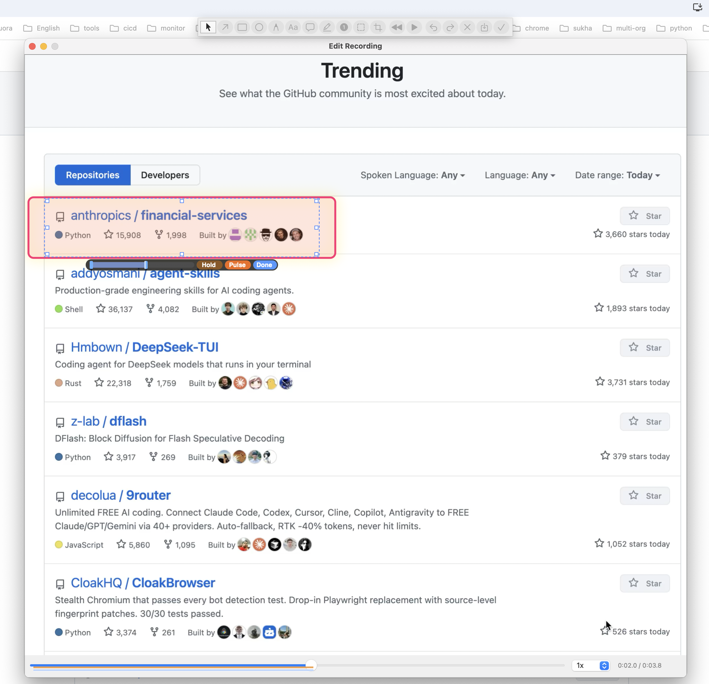

Build locally
cargo build --release
./target/release/clipshotClipShot launches as a menu bar app without a Dock icon.
macOS menu bar capture utility
ClipShot helps teams turn screen evidence into clear feedback. Screenshot capture is free; screen recording and scroll capture unlock through a StoreKit trial or full purchase.

Start
cargo build --release
./target/release/clipshotClipShot launches as a menu bar app without a Dock icon.
Screen Recording permission is required for selected-region capture. Accessibility is only used for scroll capture when the target app needs synthetic scroll input.
Reference
| Hotkey | Action | Availability |
|---|---|---|
| Ctrl + Cmd + A | Capture screenshot | Free |
| Ctrl + Cmd + Z | Start or stop screen recording | Trial / full unlock |
| Ctrl + Cmd + S | Start or stop scroll capture | Trial / full unlock |
Showcases

Use a screenshot when one static view is enough. Select the region, add an arrow, rectangle, callout, text, blur, or numbered steps, then copy or save the annotated PNG.

Use scroll capture for pages, lists, logs, and documents that do not fit on screen. ClipShot scrolls through the selected content, combines it into one image, and opens the result for annotation.

Use recording when movement matters. Add annotations after capture, control when they appear, hold important frames, add pulse emphasis, and export a clean MP4.
Scroll Capture
Scroll capture is designed for bug reports and review notes where the relevant context spans beyond the viewport: dashboards, repository lists, settings pages, chat threads, terminal output, and documentation pages.
Press the scroll capture hotkey, drag around the content column, and keep the target app visible.
ClipShot scrolls through the content and turns everything it sees into one clean, tall screenshot.
Use rectangles for affected regions, arrows for exact targets, blur for sensitive data, and steps for ordered review notes.
Scroll Capture Annotation Pattern
Place step markers next to the important rows or sections so the reviewer can scan the long image without losing order.
Frame each affected block instead of underlining text. It stays readable when the image is zoomed out.
Blur tokens, user data, or internal URLs directly on the long screenshot before copying or saving it.
Recording
Recording captures the cursor and click ripples, then opens a frame editor where annotations can be timed to the exact moment they matter.
Press the recording hotkey, drag the region, perform the workflow, then stop from the menu bar or hotkey.
Select an annotation and use the mini bar to control its start and end frames. Extend the end marker when the target stays relevant longer.
Add pulse when the viewer needs to notice an element, insert a hold on a keyframe, or increase playback speed for long quiet sections.
Recording Annotation Example
Pulse applies a breathing scale and glow to the original annotation. It works for arrows, rectangles, callouts, text, and other annotation types without adding a separate circle or extra bounds.
Recording Annotation Pattern
Show an annotation only while the target is relevant. This keeps the viewer focused on the current action.
Insert a hold when the viewer needs time to read a state, compare values, or understand the result of a click.
Speed up repetitive waiting, slow down dense interactions, and let annotation spans follow the adjusted timeline.
Annotation
Drawable tools use color swatches and stroke presets. Text annotations use color and font-size controls. Selecting an existing annotation activates the matching tool and style controls so it can be edited directly.
App Store model
| Feature | Free | Trial / full unlock |
|---|---|---|
| Screenshot capture | Yes | Yes |
| Screen recording | Locked after trial | Yes |
| Scroll capture | Locked after trial | Yes |
The App Store build uses StoreKit product IDs clipshot.trial.14days and clipshot.full_unlock. No registration server is required.